贵州省赛区启动仪式暨新闻发布
发布时间：2015-12-01
2015年11月30日，首届“中国影视歌曲歌手大赛”贵州省赛区启动仪式暨新闻发布会在省会城市贵阳铂尔曼大酒店隆重召开。

大赛组委会主席 姜国顺
参加此次会议的嘉宾有：来自北京的中国影视歌曲歌手大赛组委会主席姜国顺、执行主席高洁、副主席乌兰托娅、杜光明、刘金英；秘书长张国顺、蒲晓琴以及贵州省委宣传部杨福全、贵州省社会科学院博士胡月军、贵州省知闻天下新闻网总经理唐炼、共青团贵州省委驻上海工委书记罗海军、贵州日报社科教部主任陈玉祥、经济与法制委员会主编吴如云、民主与法制社贵州记者站站长刘国彬、贵州大学艺术学院朱亚禄、贵州博联大数据商会会长张杰、秘书长彭娟、贵州省著名歌手穆维平、阿幼朵以及企业家代表等等多位嘉宾。
大赛贵州省赛区组委会主席陈毅在会上发言激动地说：1935年中国共产党在我们贵州省的遵义市召开了响誉全国的“遵义会议”，此次会议确立了以毛泽东为核心的新的党中央领导，使中国红军在极端危险的境地得以保存下来，胜利地完成2万5千里长征，挽救了中国。“遵义会议”是中国共产党载入史册的一次重要会议。是中国生死攸关的转折点。因此，遵义市也被国务院列入首批公布的24个有历史文化名城之一。这次我们贵州蓝狼文化传媒有限公司团队于北京能够在与全省众多优秀团队竟争当中非常荣幸地取得了大赛贵州省赛区承办权，我们团队全体成员非常地激动与兴奋，大家几日夜不能寐。我们团队全体成员将积极响应习近平总书记的号召，一定认真努力地把这国家级的赛事做好，通过参赛选手演唱中国百年新老电影电视歌曲，提高爱国主义情操。坚持“公开、公平、公正”的原则进行层层选拔，从而挖掘出优秀歌手，为贵州省人民争光，为贵州省的民族文化事业发展以及推动贵州省企业经济繁荣做出最大的贡献。今天，借此机会我代表我们贵州省赛区组委会的全体成员对由北京远道专程而来的大赛总部组委会领导、现场的各位来宾、各位好朋友以及给于我们大赛组委会大力支持与帮助的诸位企业领导以及众多媒体嘉宾表示最真诚的感谢，谢谢你们！
大赛组委会主席姜国顺、副主席乌兰托娅、贵州日报社科教部主任陈玉祥、贵州省著名歌手本届大赛贵州省赛区评审团主席穆维平、贵州省著名歌手本届大赛贵州省赛区评审团副主席阿幼朵、贵州大学艺术学院朱亚禄等嘉宾也在会议现场为大赛致词。
另外，穆维平、阿幼朵在致词时还清唱歌曲并共同为来自北京的组委会领导以及现场嘉宾敬酒，使现场气氛热烈非凡。届时，省内外诸多媒体对此次启动仪式暨新闻发布会进行了报道。
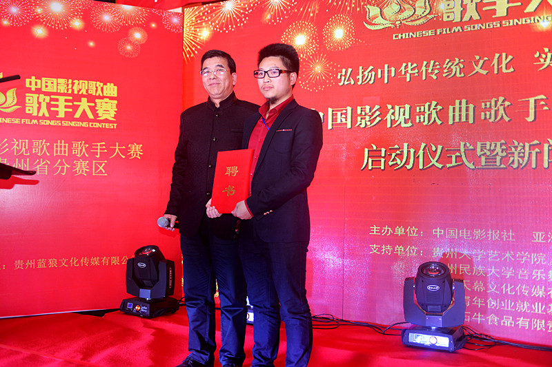
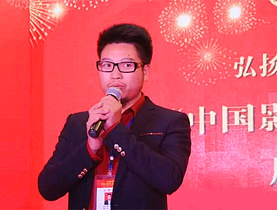
贵州省赛区组委会主席 陈毅
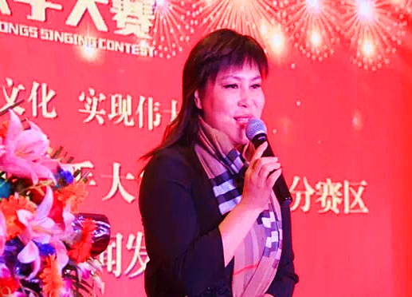
大赛组委会副主席 乌兰托娅
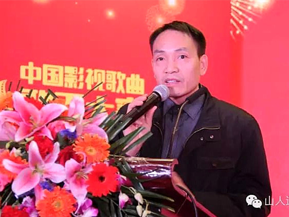
贵州日报社科教部主任 陈玉祥
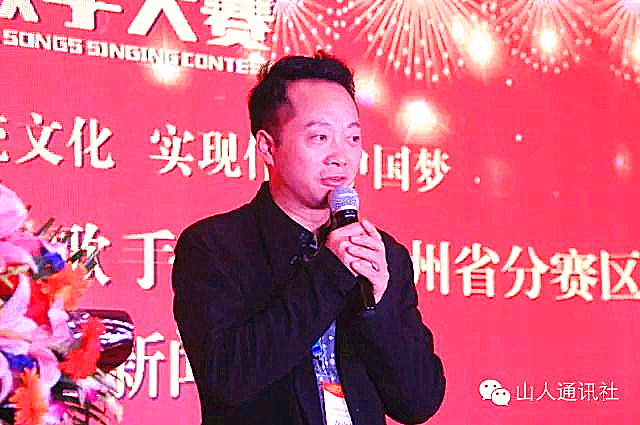
贵州省著名歌手 本届大赛贵州省赛区评审团主席 穆维平
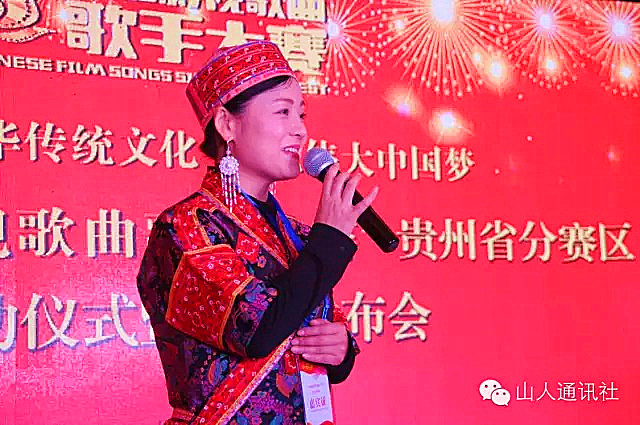
贵州省著名歌手 本届大赛贵州省赛区评审团副主席 阿幼朵
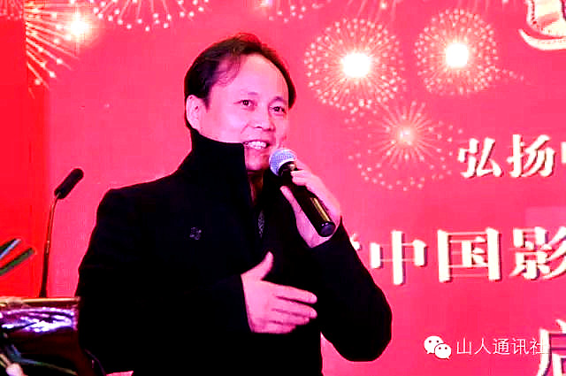
贵州大学艺术学院 朱亚禄
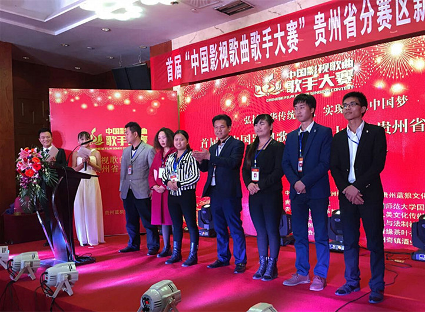
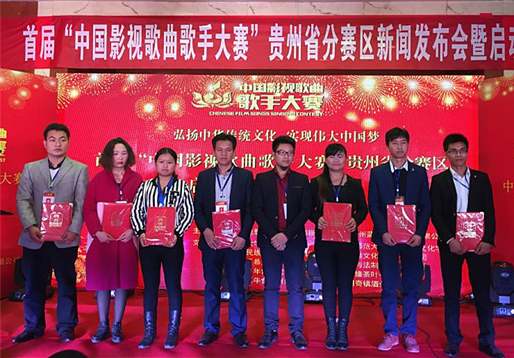
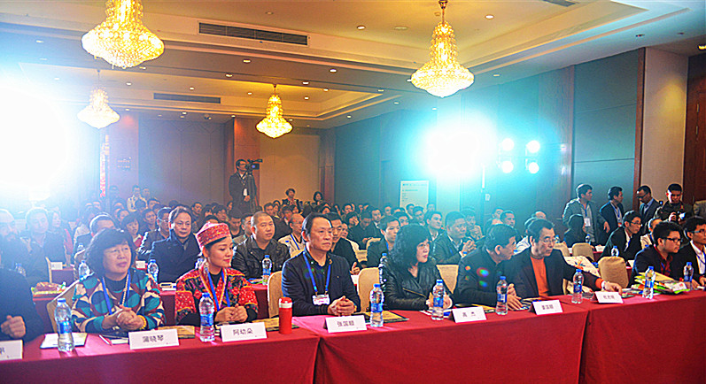
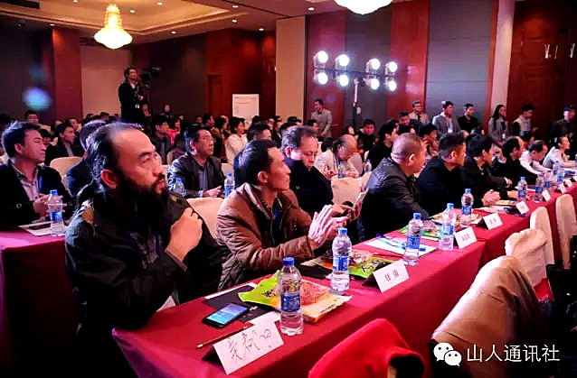
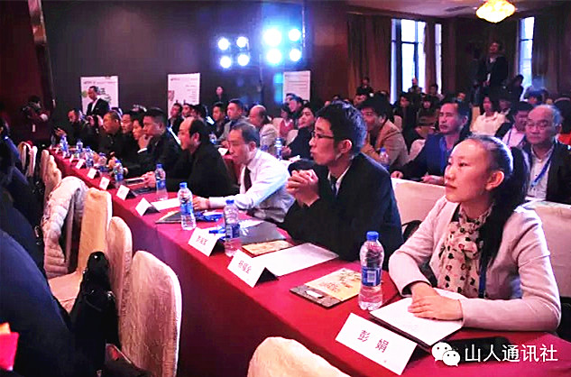
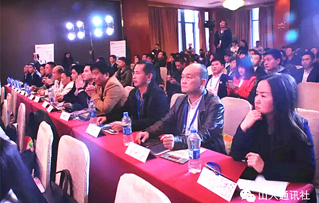
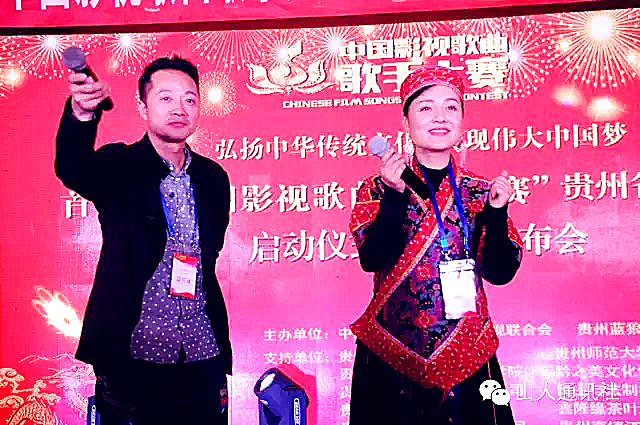
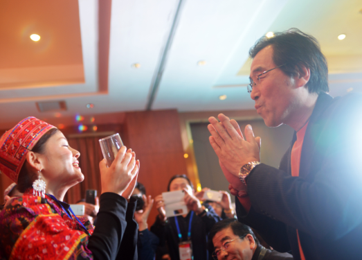
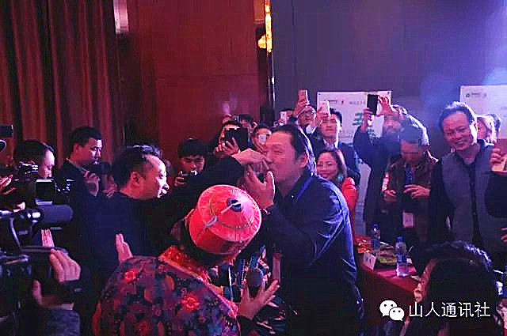
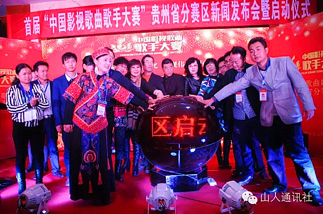
下一篇：“我们在 爱就在”主题公益活动